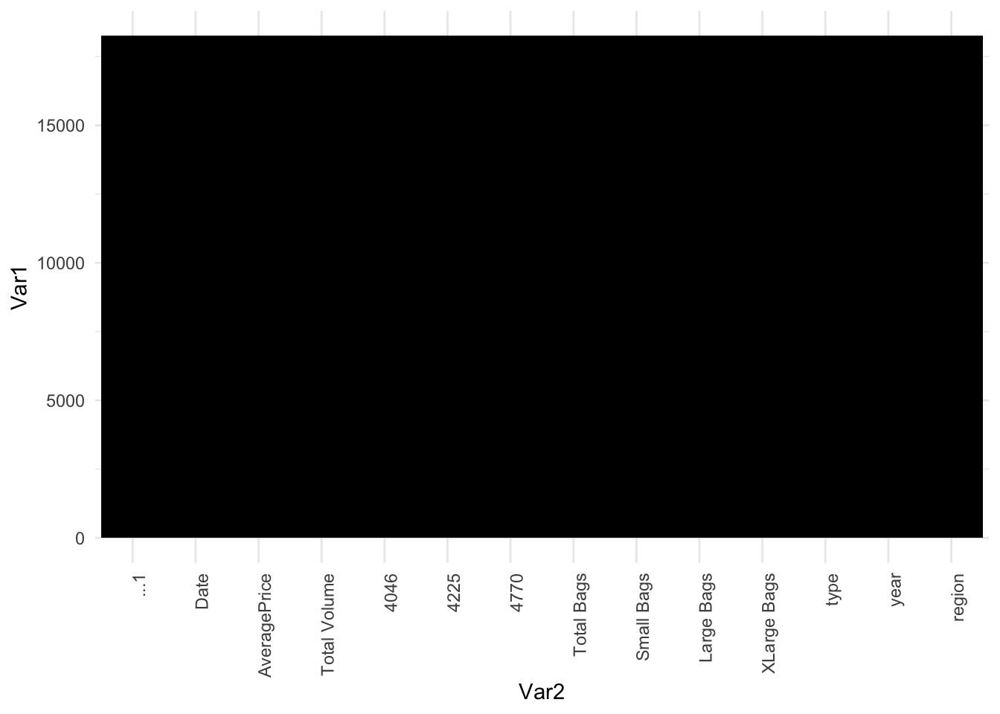
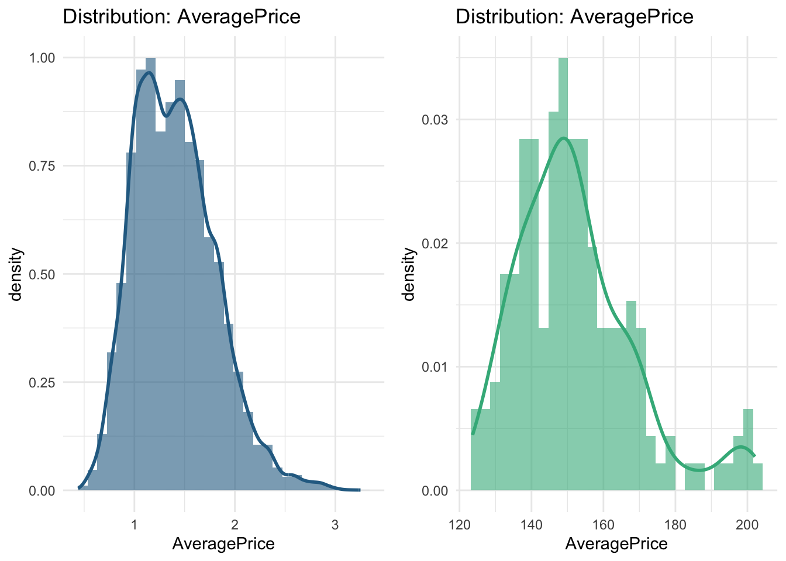
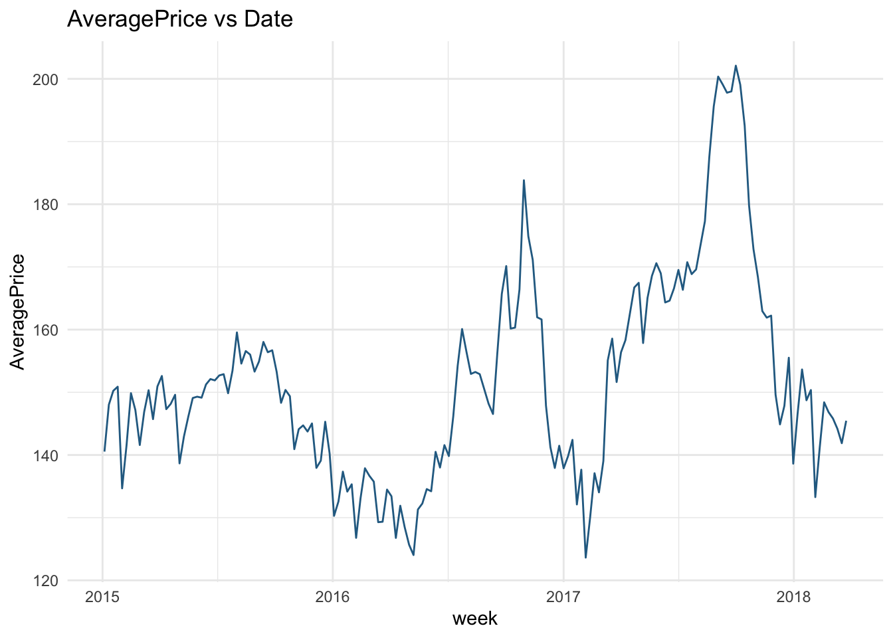
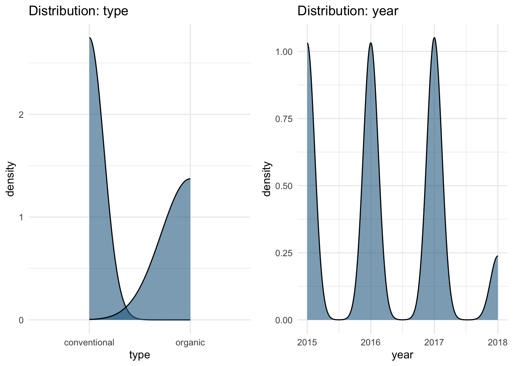
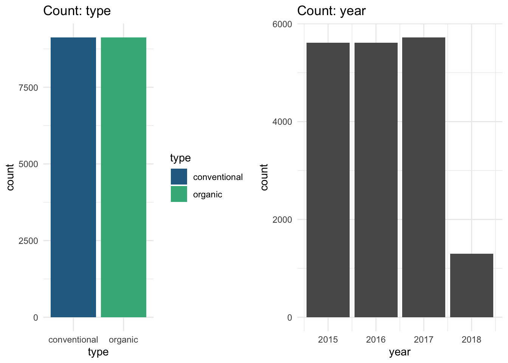

Code
library(tidyverse)
library(ggplot2)
library(naniar)library(tidyverse)
library(ggplot2)
library(naniar)data <- read_csv('data/avocado.csv')
head(data)# A tibble: 6 × 14
...1 Date AveragePrice `Total Volume` `4046` `4225` `4770` `Total Bags`
<dbl> <date> <dbl> <dbl> <dbl> <dbl> <dbl> <dbl>
1 0 2015-12-27 1.33 64237. 1037. 5.45e4 48.2 8697.
2 1 2015-12-20 1.35 54877. 674. 4.46e4 58.3 9506.
3 2 2015-12-13 0.93 118220. 795. 1.09e5 130. 8145.
4 3 2015-12-06 1.08 78992. 1132 7.20e4 72.6 5811.
5 4 2015-11-29 1.28 51040. 941. 4.38e4 75.8 6184.
6 5 2015-11-22 1.26 55980. 1184. 4.81e4 43.6 6684.
# ℹ 6 more variables: `Small Bags` <dbl>, `Large Bags` <dbl>,
# `XLarge Bags` <dbl>, type <chr>, year <dbl>, region <chr>Data Dimensions
dim(data)[1] 18249 14Column Names:
colnames(data) [1] "...1" "Date" "AveragePrice" "Total Volume" "4046"
[6] "4225" "4770" "Total Bags" "Small Bags" "Large Bags"
[11] "XLarge Bags" "type" "year" "region" Structure:
str(data)spc_tbl_ [18,249 × 14] (S3: spec_tbl_df/tbl_df/tbl/data.frame)
$ ...1 : num [1:18249] 0 1 2 3 4 5 6 7 8 9 ...
$ Date : Date[1:18249], format: "2015-12-27" "2015-12-20" ...
$ AveragePrice: num [1:18249] 1.33 1.35 0.93 1.08 1.28 1.26 0.99 0.98 1.02 1.07 ...
$ Total Volume: num [1:18249] 64237 54877 118220 78992 51040 ...
$ 4046 : num [1:18249] 1037 674 795 1132 941 ...
$ 4225 : num [1:18249] 54455 44639 109150 71976 43838 ...
$ 4770 : num [1:18249] 48.2 58.3 130.5 72.6 75.8 ...
$ Total Bags : num [1:18249] 8697 9506 8145 5811 6184 ...
$ Small Bags : num [1:18249] 8604 9408 8042 5677 5986 ...
$ Large Bags : num [1:18249] 93.2 97.5 103.1 133.8 197.7 ...
$ XLarge Bags : num [1:18249] 0 0 0 0 0 0 0 0 0 0 ...
$ type : chr [1:18249] "conventional" "conventional" "conventional" "conventional" ...
$ year : num [1:18249] 2015 2015 2015 2015 2015 ...
$ region : chr [1:18249] "Albany" "Albany" "Albany" "Albany" ...
- attr(*, "spec")=
.. cols(
.. ...1 = col_double(),
.. Date = col_date(format = ""),
.. AveragePrice = col_double(),
.. `Total Volume` = col_double(),
.. `4046` = col_double(),
.. `4225` = col_double(),
.. `4770` = col_double(),
.. `Total Bags` = col_double(),
.. `Small Bags` = col_double(),
.. `Large Bags` = col_double(),
.. `XLarge Bags` = col_double(),
.. type = col_character(),
.. year = col_double(),
.. region = col_character()
.. )
- attr(*, "problems")=<externalptr> Missing Data:
gg_miss_var(data) +
scale_fill_viridis_c(option = "magma") +
theme_minimal() +
theme(legend.position = "none")
Numerical Summary
data %>%
summary() ...1 Date AveragePrice Total Volume
Min. : 0.00 Min. :2015-01-04 Min. :0.440 Min. : 85
1st Qu.:10.00 1st Qu.:2015-10-25 1st Qu.:1.100 1st Qu.: 10839
Median :24.00 Median :2016-08-14 Median :1.370 Median : 107377
Mean :24.23 Mean :2016-08-13 Mean :1.406 Mean : 850644
3rd Qu.:38.00 3rd Qu.:2017-06-04 3rd Qu.:1.660 3rd Qu.: 432962
Max. :52.00 Max. :2018-03-25 Max. :3.250 Max. :62505647
4046 4225 4770 Total Bags
Min. : 0 Min. : 0 Min. : 0 Min. : 0
1st Qu.: 854 1st Qu.: 3009 1st Qu.: 0 1st Qu.: 5089
Median : 8645 Median : 29061 Median : 185 Median : 39744
Mean : 293008 Mean : 295155 Mean : 22840 Mean : 239639
3rd Qu.: 111020 3rd Qu.: 150207 3rd Qu.: 6243 3rd Qu.: 110783
Max. :22743616 Max. :20470573 Max. :2546439 Max. :19373134
Small Bags Large Bags XLarge Bags type
Min. : 0 Min. : 0 Min. : 0.0 Length:18249
1st Qu.: 2849 1st Qu.: 127 1st Qu.: 0.0 Class :character
Median : 26363 Median : 2648 Median : 0.0 Mode :character
Mean : 182195 Mean : 54338 Mean : 3106.4
3rd Qu.: 83338 3rd Qu.: 22029 3rd Qu.: 132.5
Max. :13384587 Max. :5719097 Max. :551693.7
year region
Min. :2015 Length:18249
1st Qu.:2015 Class :character
Median :2016 Mode :character
Mean :2016
3rd Qu.:2017
Max. :2018 library(lubridate)
# Create a deep copy of the data frame
df1 <- data
# Convert the 'Date' column to Date type
df1$Date <- ymd(df1$Date)
# Arrange the data by Date and create a week column
df1 <- df1 %>%
arrange(Date) %>%
mutate(week = floor_date(Date, "week"))
# Group by the week column and summarise the numeric columns
df1 <- df1 %>%
group_by(week) %>%
summarise(across(where(is.numeric), sum, na.rm = TRUE))Warning: There was 1 warning in `summarise()`.
ℹ In argument: `across(where(is.numeric), sum, na.rm = TRUE)`.
ℹ In group 1: `week = 2015-01-04`.
Caused by warning:
! The `...` argument of `across()` is deprecated as of dplyr 1.1.0.
Supply arguments directly to `.fns` through an anonymous function instead.
# Previously
across(a:b, mean, na.rm = TRUE)
# Now
across(a:b, \(x) mean(x, na.rm = TRUE))# Display the first few rows of the resulting data frame
head(df1)# A tibble: 6 × 12
week ...1 AveragePrice `Total Volume` `4046` `4225` `4770` `Total Bags`
<date> <dbl> <dbl> <dbl> <dbl> <dbl> <dbl> <dbl>
1 2015-01-04 5507 141. 84674337. 3.31e7 3.69e7 2.28e6 12446221.
2 2015-01-11 5399 148. 78555807. 3.10e7 3.28e7 2.35e6 12374045.
3 2015-01-18 5291 150. 78388784. 3.18e7 3.17e7 2.21e6 12715785.
4 2015-01-25 5183 151. 76466281. 3.23e7 2.89e7 2.08e6 13153647.
5 2015-02-01 5075 135. 119453235. 5.03e7 5.07e7 3.69e6 14776526.
6 2015-02-08 4967 142. 86671106. 3.51e7 3.64e7 2.00e6 13127579.
# ℹ 4 more variables: `Small Bags` <dbl>, `Large Bags` <dbl>,
# `XLarge Bags` <dbl>, year <dbl># Load necessary libraries
library(ggplot2)
library(gridExtra)
Attaching package: 'gridExtra'The following object is masked from 'package:dplyr':
combine# Define the color palette
color1 <- c('#296C92', '#3EB489')
# Create the first set of plots for the distribution of AveragePrice
p1 <- ggplot(data, aes(x = AveragePrice)) +
geom_density(fill = color1[1], alpha = 0.6) +
ggtitle('Distribution: AveragePrice')
p2 <- ggplot(df1, aes(x = AveragePrice)) +
geom_density(fill = color1[2], alpha = 0.6) +
ggtitle('Distribution: AveragePrice')
# Arrange the first set of plots side by side
grid.arrange(p1, p2, ncol = 2)
# Convert week to Date for plotting purposes
df1 <- df1 %>%
mutate(Date = week)
# Create the line plot for AveragePrice vs Date
p3 <- ggplot(df1, aes(x = Date, y = AveragePrice)) +
geom_line(color = color1[1]) +
ggtitle('AveragePrice vs Date') +
theme_minimal()
# Display the line plot
print(p3)
# Get column names
col <- names(data)
# Initialize lists to store categorical and numerical features
categorical_features <- c()
numerical_features <- c()
# Iterate through columns
for (i in col) {
if (length(unique(data[[i]])) > 6) {
numerical_features <- c(numerical_features, i)
} else {
categorical_features <- c(categorical_features, i)
}
}
# Remove specific features from numerical features
numerical_features <- numerical_features[!numerical_features %in% c('Date', 'AveragePrice', 'region')]
# Print categorical and numerical features
cat('Categorical Features:', paste(categorical_features, collapse = ', '), '\n')Categorical Features: type, year cat('Numerical Features:', paste(numerical_features, collapse = ', '), '\n')Numerical Features: ...1, Total Volume, 4046, 4225, 4770, Total Bags, Small Bags, Large Bags, XLarge Bags # Load necessary libraries
library(ggplot2)
library(gridExtra)
# Convert 'type' column to factor using LabelEncoder
data$type <- as.factor(data$type)
# Create subplots for distribution and count plots
p_distribution <- lapply(categorical_features, function(feature) {
ggplot(data, aes(x = !!sym(feature))) +
geom_density(fill = "#296C92", alpha = 0.6) +
ggtitle(paste("Distribution:", feature)) +
theme_minimal()
})
p_count <- lapply(categorical_features, function(feature) {
ggplot(data, aes(x = !!sym(feature), fill = !!sym(feature))) +
geom_bar() +
scale_fill_manual(values = c("#296C92", "#3EB489")) +
ggtitle(paste("Count:", feature)) +
theme_minimal()
})
# Combine plots into grid
grid.arrange(grobs = p_distribution, ncol = 2)
grid.arrange(grobs = p_count, ncol = 2)Warning: The following aesthetics were dropped during statistical transformation: fill
ℹ This can happen when ggplot fails to infer the correct grouping structure in
the data.
ℹ Did you forget to specify a `group` aesthetic or to convert a numerical
variable into a factor?